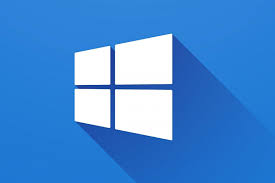
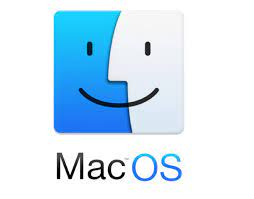

WINDOWS

Microsoft Windows, commonly referred to as Windows, is a group of several proprietary graphical operating system families, all of which are developed and marketed by Microsoft.
Each family caters to a certain sector of the computing industry. Active Microsoft Windows families include Windows NT and Windows IoT; these may encompass subfamilies, (e.g. Windows Server or Windows Embedded Compact) (Windows CE).
Defunct Microsoft Windows families include Windows 9x, Windows Mobile and Windows Phone.
Microsoft introduced an operating environment named Windows on November 20, 1985, as a graphical operating system shell for MS-DOS in response to the growing interest in graphical user interfaces (GUIs).
Microsoft Windows came to dominate the world's personal computer (PC) market with over 90% market share, overtaking Mac OS, which had been introduced in 1984.

macOS is a proprietary graphical operating system developed and marketed by Apple Inc. since 2001. It is the primary operating system for Apple's Mac computers.
Within the market of desktop and laptop computers it is the second most widely used desktop OS, after Windows NT and ahead of Chrome OS.
macOS succeeded the classic Mac OS, a Macintosh operating system with nine releases from 1984 to 1999. During this time, Apple cofounder Steve Jobs had left Apple and started another company, NeXT, developing the NeXTSTEP platform that would later be acquired by Apple to form the basis of macOS.
The first desktop version, Mac OS X 10.0, was released in March 2001, with its first update, 10.1, arriving later that year.
All releases from Mac OS X 10.5 Leopard[7] and after are UNIX 03 certified,[8] with an exception for OS X 10.7 Lion.[9] Apple's mobile operating system, iOS, has been considered a variant of macOS.

Linux (/ˈlinʊks/ (About this soundlisten) LEEN-uuks or /ˈlɪnʊks/ LIN-uuks[11]) is a family of open-source Unix-like operating systems based on the Linux kernel,[12] an operating system kernel first released on September 17, 1991, by Linus Torvalds.[13][14][15] Linux is typically packaged in a Linux distribution.
Distributions include the Linux kernel and supporting system software and libraries, many of which are provided by the GNU Project.
Many Linux distributions use the word "Linux" in their name, but the Free Software Foundation uses the name "GNU/Linux" to emphasize the importance of GNU software, causing some controversy.
Popular Linux distributions[18][19][20] include Debian, Fedora, and Ubuntu.
Commercial distributions include Red Hat Enterprise Linux and SUSE Linux Enterprise Server.
Desktop Linux distributions include a windowing system such as X11 or Wayland, and a desktop environment such as GNOME or KDE Plasma.
Distributions intended for servers may omit graphics altogether, or include a solution stack such as LAMP. Because Linux is freely redistributable, anyone may create a distribution for any purpose.